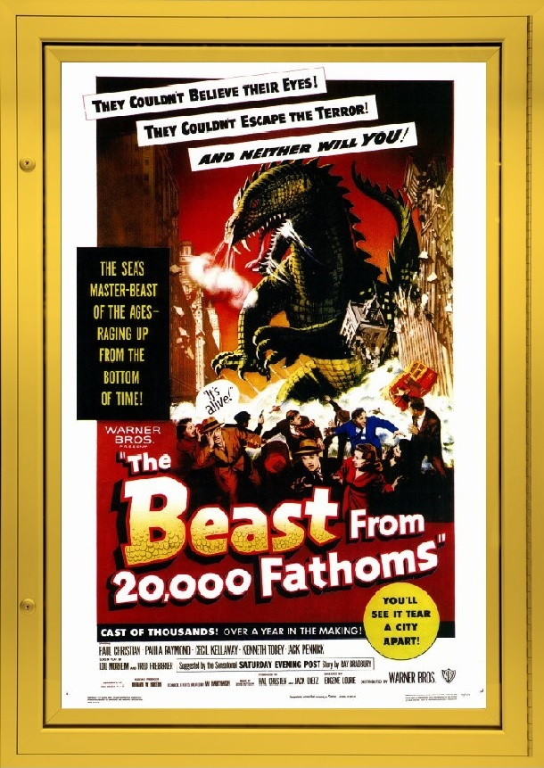

Everything has a beginning, it must start from somewhere. Most days, a trend can appear out of nowhere and no one usually knows how it came to be. That isn't always the case, especially when it comes the giant-monster craze of the '1950s. While most people credit KING KONG (1933) as the first gargantuan beast to start this whole trend, the idea of a monster being spawned by nuclear radiation was created in '1953s: THE BEAST FROM 20,000 FATHOMS.
The film starts out in Antarctica, where a group of scientists and military personal test an atomic bomb which awakens a dinosaur called the Rhedosaurus (red-o-soar-us). The creature makes its way out of Antarctica and arrives in New York City causing mayhem and destruction in its wake. The plot is VERY basic, but considering a lot of other monster movies of the time followed the exact same structure, it's original by comparison. This film also served as the inspiration for the king of the monsters himself: Godzilla.
To save time, the human characters in the film will not be discussed, mainly because they're there to move the plot forward. The real star of the film is the monster itself. Ray Harryhausen, the man behind the special effects, did a great job of both, designing the creature and giving it enough personality to make it stand out above the rest. THE BEAST FROM 20,000 FATHOMS, represented Ray's first solo venture as a stop-motion artist. Prior to this film, he was a co-animator with Willis O'Brien on MIGHTY JOE YOUNG in 1949.
So, if you’re wondering where giant monsters truly got their start on the big screen, then you should definitely check out THE BEAST FROM 20,000 FATHOMS.
Final Rating:
THE BEAST FROM 20,000 FATHOMS is available on Blu-Ray and DVD, possibly at your local video-store, but you're more than likely be able to find a copy online. As for alternate recommendations, I first point you towards the original GOJIRA (GODZILLA), another important piece of monster movie history, lastly, I suggest checking out TREMORS, a giant monster flick on a smaller scale.
Until Next Time, Respect the Past…